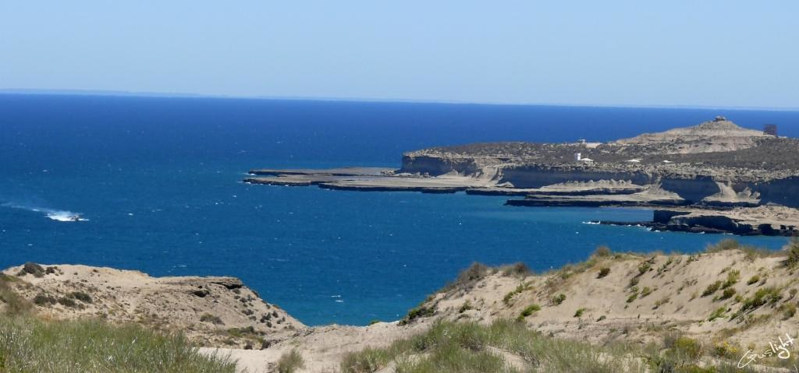
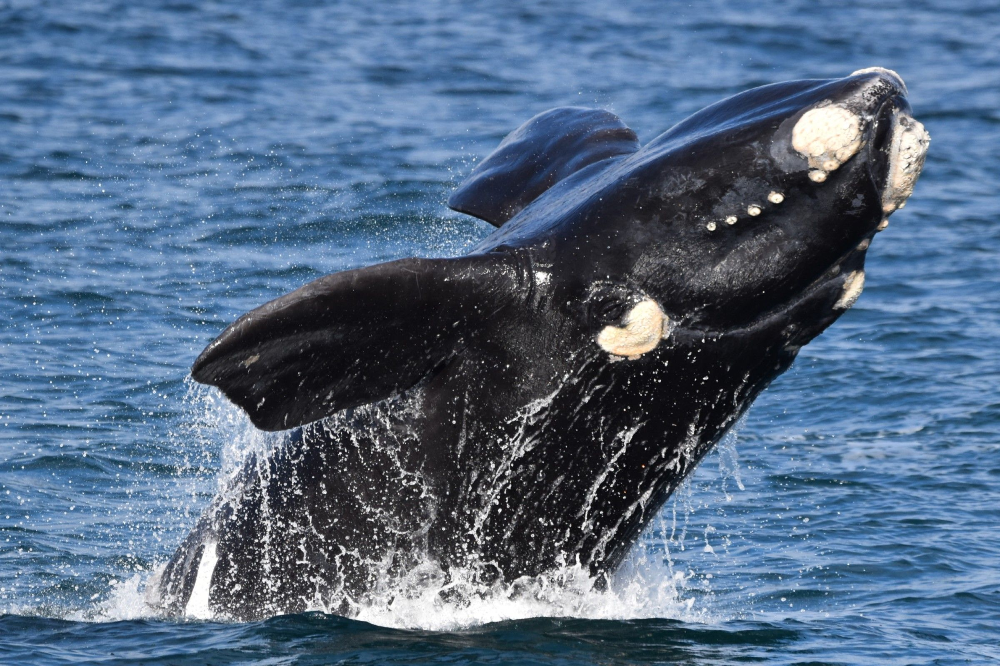
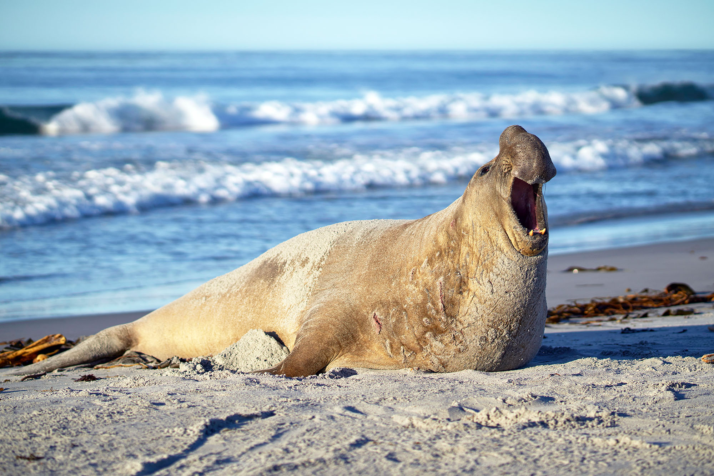
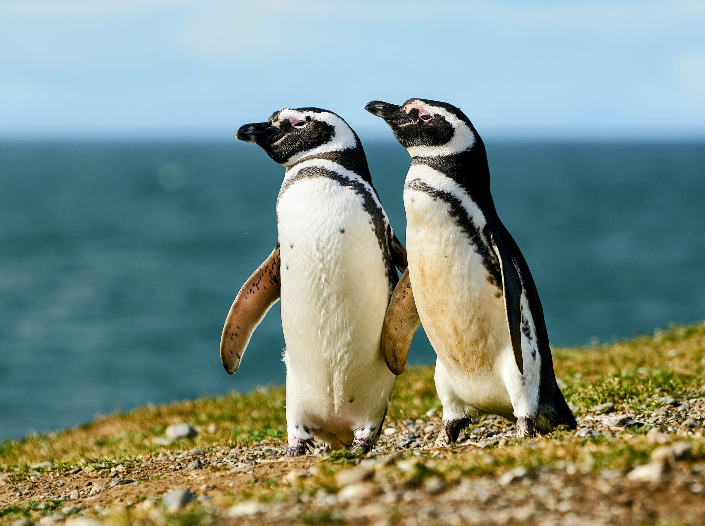
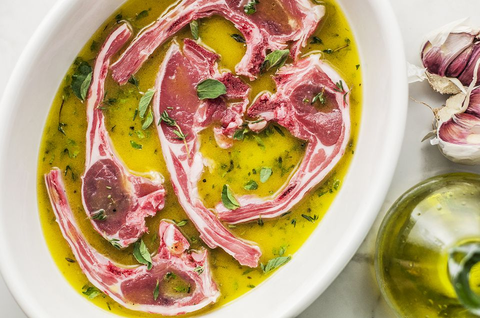

Once a salt mining outpost, now a protected sanctuary.
This area was originally used for salt mining (the "Salinas" in the center) and sheep ranching. In the early 20th century, people actually hunted the sea lions for their oil!
In 1999, UNESCO declared it a World Heritage site. Since then, the economy has completely flipped from extraction to Conservation Tourism.
In the last 20 years, the whale population has exploded from near-extinction to over 1,500 visiting individuals annually. However, climate change is shifting their food sources (krill), so scientists are closely monitoring their migration patterns.
Welcome to Perito Moreno Glacier
Peninsula Valdes

It’s a "Biological Corridor." The Southern Right Whale population has actually been increasing by about $7\%$ annually thanks to strict maritime protection laws.
Recently, researchers found that seagulls have started "parasitizing" the whales—landing on their backs to peck at their skin. It’s a fascinating (and slightly gross) example of rapid behavioral adaptation.
What to Expect
Up-close encounters with Southern Right Whales (June–Dec) and Orcas that literally beach themselves to hunt seals.
A UNESCO site famous for whale watching (Southern Right Whales), elephant seals, and penguins.
The Leviathan: Southern Right Whales

These whales are "skim feeders." Unlike Humpbacks that gulp, Right Whales swim with their mouths open, using 2.5-meter-long baleen plates to filter tiny copepods.
The "Callosity" Fingerprint: See those white, crusty patches on their heads? Those are callosities—calcified skin patches colonized by 'whale lice' (cyamids). Every whale has a unique pattern, which scientists use like a fingerprint to track them!
What to Expect: From June to December, you’ll see them "breaching" (leaping) and "tail-slapping."
Pro Tip
Go to El Doradillo beach at high tide. The water gets deep very quickly, so mothers and calves swim just 15–20 meters from your feet!
The Heavyweight: Southern Elephant Seals

These are the largest "pinnipeds" (fin-footed mammals) on Earth. A male can weigh 3,600 kg that’s heavier than two large SUVs! They are elite divers, reaching depths of 1,500 meters and holding their breath for two hours.
The "Proboscis" Amp: Males have a trunk-like nose that acts as a re-breather to conserve moisture during their 3-month fast on land, and it also amplifies their roars to scare off rivals.
What to Expect: Total drama. Between September and October, you’ll witness "harem battles" where massive bulls slam their chests together to protect their group of females.
The Formal Wear: Magellanic Penguins

These penguins are "burrowers." They don't live on ice; they dig holes in the dirt under bushes to protect their eggs from the Patagonian sun and predators.
The Thermal Regulator: See that pink patch of skin around their eyes? That’s their "radiator." When they get too hot, they send blood there to cool down—it’s like an organic air conditioning system!
What to Expect: A sea of black and white. At places like Estancia San Lorenzo, you can walk among thousands of them from September to March.
The "Gaucho-Marine" Recipe: Lamb & Sea Salt

Since this is a mix of ranching land and ocean, the local specialty is Cordero Patagónico (Patagonian Lamb).
The History
Because the sheep eat the salty, mineral-rich shrubs of the steppe, the meat is naturally "pre-seasoned."
The Recipe
The Secret
Use coarse sea salt from the nearby San José Gulf.
The Process
Rub the lamb with garlic, rosemary, and an absurd amount of salt. Roast it "a la cruz" (on a metal cross) over a slow wood fire for 4 hours. The salt creates a chemical "crust" that locks in the moisture, making the meat fall off the bone.